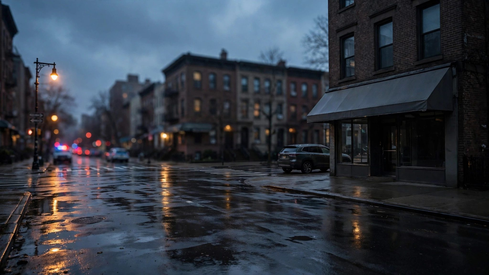

ब्रोन्क्स ICE गोलीकाण्डपछि NYPD ले बडी क्यामेराको फुटेज सार्वजनिक गर्यो
भिडियोमा बिहीबारको गोलीकाण्डपछि पहिलो सहर अधिकारीहरू घटनास्थल पुगेको, ओस्कार बेल्गललाई हत्कडीमा भुइँमा फेला पारेको र अस्पताल हतारिएर लगेको देखिन्छ। गोलीकाण्डको अनुसन्धान FBI र होमल्याण्ड सुरक्षा अनुसन्धान टोलीले गरिरहेको छ।

मुख्य बुँदाहरू
- **अद्यावधिक २२:४६ UTC: विकासशील समाचार।**
- न्युयोर्क: न्युयोर्क प्रहरी विभागले शुक्रबार ती पहिलो सहर अधिकारीहरूको बडी-वर्न क्यामेरा फुटेज सार्वजनिक गर्यो, जो ब्रोन्क्सको त्यो गल्लीमा पुगेका थिए जहाँ अघिल्लो दिन एक संघीय अध्यागमन एजेन्टले…
- शुक्रबार बिहान सार्वजनिक गरिएको भिडियोमा दुई अधिकारी गस्ती गाडीमा मार्बल हिल एभेन्यु पुगेको देखिन्छ, जहाँ भीडले अध्यागमन एजेन्टहरूले गोली चलाएको भनेर चिच्याइरहेका छन्। घाइते ओस्कार बेल्गल हत्कडी…
**अद्यावधिक २२:४६ UTC: विकासशील समाचार।**
न्युयोर्क: न्युयोर्क प्रहरी विभागले शुक्रबार ती पहिलो सहर अधिकारीहरूको बडी-वर्न क्यामेरा फुटेज सार्वजनिक गर्यो, जो ब्रोन्क्सको त्यो गल्लीमा पुगेका थिए जहाँ अघिल्लो दिन एक संघीय अध्यागमन एजेन्टले २८ वर्षीय व्यक्तिको घाँटीमा गोली प्रहार गरेका थिए; फुटेजमा गोलीकाण्डपछिका हंगामापूर्ण क्षणहरू कैद छन्।
शुक्रबार बिहान सार्वजनिक गरिएको भिडियोमा दुई अधिकारी गस्ती गाडीमा मार्बल हिल एभेन्यु पुगेको देखिन्छ, जहाँ भीडले अध्यागमन एजेन्टहरूले गोली चलाएको भनेर चिच्याइरहेका छन्। घाइते ओस्कार बेल्गल हत्कडी लगाइएको अवस्थामा खैरो SUV नजिक भुइँमा बसेका छन्। परावर्तक निर्माण-शैलीको ज्याकेट लगाएका र लामो बन्दुक बोकेका एक व्यक्ति नजिकै उभिएका छन्, प्रहरी अधिकारीहरूले तिनीहरू संघीय एजेन्ट भएको बताए। अधिकारीहरूले रेडियोबाट एम्बुलेन्स माग्छन्, अनि नकुरेर लैजाने निर्णय गर्छन्। उनीहरूले बेल्गललाई उठाएर प्रहरी गाडीमा हाल्छन्, न्युयोर्क-प्रेस्बिटेरियन एलेन अस्पताल पुर्याउँछन् र आपतकालीन विभागका ढोकासम्म काँधमा बोक्छन्।
सहर प्रहरीले जोड दिएर भन्यो कि उसका अधिकारीहरू गोली चलेको खबरपछि पुगेका थिए र संघीय कारबाहीमा संलग्न थिएनन्। प्रहरी आयुक्त जेसिका टिस्चले भनिन् कि सहरका निगरानी क्यामेराहरूले बिहीबार दिउँसो करिब ४ बजे बेल्गलले खैरो होन्डा CR-V लाई पार्किङमा पछाडि लगाउँदै गर्दा सादा पोसाकका संघीय अधिकारी बन्दुक तानेर चालकको झ्यालतिर आएको कैद गरेको थियो। गाडी अगाडि बढ्न थालेपछि कम्तीमा एक अधिकारीले सात राउण्ड गोली चलाए, जुन बेल्गलको बायाँ कानमुनि लाग्यो, टिस्चले बताइन्। घटनास्थलबाट सात खाली खोल बरामद गरिएका थिए।
डोमिनिकन नागरिक बेल्गलको पछाडिको सिटमा ५ वर्षीय बालक थियो, जसलाई उनका छोरा भएको विश्वास गरिन्छ। बालकलाई गोली लागेन र अहिले उनी आफन्तसँग छन्, टिस्चले भनिन्।
होमल्याण्ड सुरक्षा विभागले मुठभेड कसरी हिंसात्मक बन्यो भन्नेबारे निकै फरक विवरण दिएको छ। अध्यागमन तथा भन्सार प्रवर्तन (ICE) का वरिष्ठ अधिकारी मार्कोस चार्ल्सले भने कि एजेन्टहरूले आफ्ना गाडीहरूले बेल्गलको कार घेरेर उनलाई बाहिर निस्कन आदेश दिए; उनका अनुसार बेल्गलले मानेनन्, अनि गाडी तीव्र गतिमा अघि बढाए, दुई सरकारी गाडीमा ठोक्किए र अन्य अधिकारीहरूतिर बढे, जसले गर्दा उनीहरूलाई गोली चलाउनुपर्यो किनभने उनीहरूले आफ्नो र जनताको ज्यान खतरामा रहेको ठाने। होमल्याण्ड सुरक्षा सचिव मार्कवेन मुलिनले शुक्रबार पत्रकार सम्मेलनमा भने कि एजेन्टहरूलाई कारमा बालक रहेको थाहा थिएन।
मुलिनले पुष्टि गरे कि घटनाका बेला ICE एजेन्टहरूले बडी क्यामेरा लगाएका थिए र ती चालू थिए, र अनुसन्धान अघि बढ्दै जाँदा त्यो फुटेज सार्वजनिक गरिने बताए। शुक्रबार साँझसम्म त्यो सार्वजनिक भएको थिएन। टिस्चले वर्णन गरेको सहर निगरानी भिडियो पनि सार्वजनिक गरिएको छैन। सार्वजनिक रूपमा वर्णन गरिएका फुटेजमा गोली चलेको क्षण देखिँदैन, र एजेन्टहरूमाथि गाडी चढाएको संघीय दाबीको स्वतन्त्र पुष्टि भएको छैन।
DHS ले बेल्गललाई अवैध रूपमा देशमा बसिरहेका, ट्रिनिटारियोस गिरोहसँग कथित सम्बन्ध राख्ने व्यक्तिका रूपमा वर्णन गर्यो, जसको आपराधिक रेकर्डमा चौथो दर्जाको गम्भीर चोरीमा दोषी ठहरिएको समावेश छ, जसका लागि अप्रिल २०२५ मा उनलाई पाँच वर्षको प्रोबेसन सजाय भयो, र २०२५ मा नियन्त्रित पदार्थको आपराधिक बिक्रीको एउटा विचाराधीन मुद्दा समावेश छ।
बिहीबार राति संघीय एजेन्टहरूले बेल्गललाई एलेन अस्पतालबाट नम्बर नदेखिने गाडीहरूमा लगे। अहिले उनलाई न्युयोर्क राज्यबाहिरको एक हिरासत केन्द्रमा राखिएको छ, चार्ल्सले भने, र ICE ले उनलाई सकेसम्म चाँडो देशबाट निकाल्ने प्रयास गर्ने बताए। मुठभेडमा दुई संघीय एजेन्ट पनि घाइते भएका थिए, जसको उपचार भइसकेको र उनीहरू छुटिसकेका छन्, एक कानून प्रवर्तन स्रोतले बताए।
गोलीकाण्डले सहरका नेताहरूमा आक्रोश फैलिएको छ। मेयर जोहरान ममदानीले बिहीबार राति यसलाई 'निन्दनीय' भने र बेल्गललाई संघीय हिरासतबाट छुटाउन राष्ट्रपति डोनाल्ड ट्रम्प र मुलिनसँग दुई घण्टा फोनमा कुरा गरे, तर सफल भएनन्। ममदानीले बडी क्यामेराका फुटेज सार्वजनिक गर्न पनि माग गरेका थिए 'ताकि तथ्यहरू स्थापित गर्न सकियोस् र सत्यसम्म पुग्न सकियोस्', शुक्रबारको सार्वजनिकीकरणले त्यो मागको, कम्तीमा आंशिक रूपमा, जवाफ दियो।
बिहीबार राति एलेन अस्पतालबाहिर करिब ३०० प्रदर्शनकारी भेला भए; कैयौं पक्राउ परे।
गोलीकाण्डको अनुसन्धान FBI र होमल्याण्ड सुरक्षा अनुसन्धान टोलीले गरिरहेको छ। कुनै निष्कर्ष सार्वजनिक गरिएको छैन।
स्रोतहरू
- रोयटर्स: न्युयोर्कका व्यक्तिमाथि गोलीकाण्डको ICE अधिकारीहरूद्वारा बचाव, 'शरणस्थल' नीतिमाथि हमला
- CNN: ICE एजेन्टहरूद्वारा ५ वर्षीय छोरा सवार कारका व्यक्तिमाथि गोली प्रहार
- न्युयोर्क पोस्ट: बडीक्याम भिडियोमा ICE द्वारा घाइते व्यक्तिलाई प्रहरीले अस्पताल पुर्याएको
- न्युयोर्क पोस्ट: न्युयोर्क गोलीकाण्डअघिको मुठभेडको निगरानी भिडियो
- न्युज९: मार्बल हिलमा ICE एजेन्टद्वारा व्यक्तिमाथि गोलीकाण्डपछि NYPD बडी क्यामेरा भिडियो
हेर्नुहोस्
समयरेखा
- Oct 8, 2026, ~4:00 p.m. EDTICE का एक अधिकारीले ब्रोन्क्सको मार्बल हिलमा ओस्कार बेल्गलको कारमाथि सात राउण्ड गोली चलाए; 28 वर्षीय बेल्गल बायाँ कानमुनि घाँटीमा घाइते भए। उनका 5 वर्षीय छोरा पछाडिको सिटमा थिए, उनलाई कुनै चोट लागेन।
- Oct 8, 2026, eveningकरिब 300 प्रदर्शनकारी NewYork-Presbyterian Allen Hospital बाहिर भेला भए; धेरै प्रदर्शनकारी पक्राउ परे। मेयर जोह्रान मामदानीले गोलीकाण्डलाई आक्रोश भने र बडी क्यामेरा फुटेज सार्वजनिक गर्न माग गरे।
- Oct 9, 2026, morningNYPD ले अधिकारीहरूको प्रतिक्रियाको बडी क्यामेरा फुटेज सार्वजनिक गर्यो। DHS ले गोलीकाण्डको बचाउ गर्यो र अनुसन्धान अघि बढ्दै जाँदा ICE एजेन्टहरूकै बडी क्यामेरा फुटेज पनि सार्वजनिक गरिने बतायो।
स्रोतहरू
- Reuters: ICE officials defend shooting of New York man, attack 'sanctuary' policies
- CNN: ICE agents shot at man in car with his 5-year-old son
- New York Post: Bodycam video shows NYPD rushing man shot by ICE to hospital
- New York Post: Surveillance video of encounter before NYC shooting
- News9: NYPD body camera video shows aftermath of ICE agent shooting man in Marble Hill